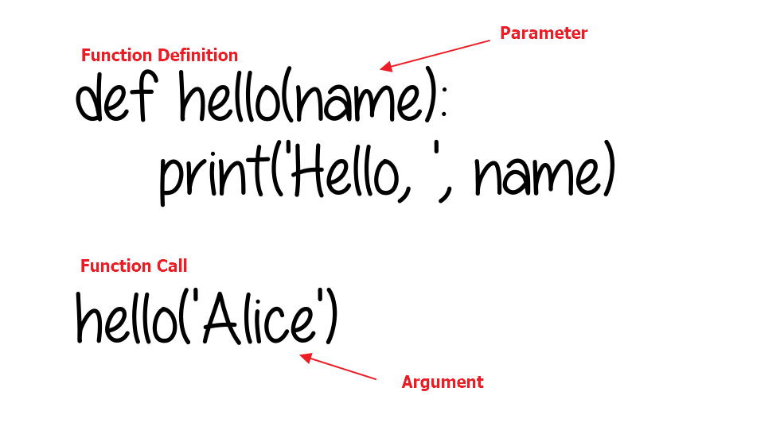

Hello, Alice
Hello, Bob4 Functions
|
|

|
4.1 Introductions
Experience has shown that the best way to develop and maintain a large program is to con struct it from smaller, more manageable pieces. This technique is called divide and conquer. We have already seen operations like print(), str() and len(), which involve parentheses wrapped around their operands. These are examples of Python’s built-in functions. Programming language allows us to use a name for a series of operations that should be performed on the given parameters. The appearance of a function in an expression or statement is known as a function call, or sometimes calling a function.
It allows you to execute a block of codes from various locations in your program by calling the function, rather than duplicating the code.
It also makes programs easier to modify. When you change a function’s code, all calls to the function execute the updated version.
A function is a block of organized code that is used to perform a task. They provide better modularity and reusability.
4.1.1 def Statements with Parameters
When you call the print() or len() function, you pass them values, called arguments, by typing them between the parentheses. You can also define your own functions that accept arguments.
The def statement defines the hello() function. Any indented lines that follow def hello(): make up the function’s body. The hello('Alice') line calls the now-created function. This function call is also known as passing the string value ‘Alice’ to the function.

You can view the execution of this program at https://autbor.com/hellofunc2/. The definition of the hello() function in this program has a parameter called name. When a function is called with arguments, the arguments are stored in the parameters. The first time the hello() function is called, it is passed the argument ‘Alice’. The program execution enters the function, and the parameter name is automatically set to ‘Alice’, which is what gets printed by the print() statement. One thing to note about parameters is that the value stored in a parameter is forgotten when the function returns. For example, if you added print(name) after hello('Bob') in the previous program, the program would give you a NameError because there is no variable named name.
4.1.1.1 Positional Arguments
When you call a function, Python must match each argument in the function call with a parameter in the function definition. The simplest way to do this is based on the order of the arguments provided. Values matched up this way are called positional arguments.
Code
I have a hamster .
My hamster's name is Harry.When we call describe_pet(), we need to provide an animal_type and a name, in that order. For example, in the function call, the argument ‘hamster’ is assigned to the parameter animal_type and the argument ‘harry’ is assigned to the parameter pet_name. In the function body, these two parameters are used to display information about the pet being described.
Note that the text on the second line is a comment called a docstring (multi-line comments introduced in Chapter 1), which describes what the function does. When Python generates documentation for the functions in your programs, it looks for a string immediately after the function’s definition. These strings are usually enclosed in triple quotes, which lets you write multiple lines. If you use the help() function, it will also be printed out as well as the function name and parameters.
Help on function describe_pet in module __main__:
describe_pet(animal_type, pet_name)
Display information about a pet.
we can write multiple lines here!
Help on built-in function print in module builtins:
print(...)
print(value, ..., sep=' ', end='\n', file=sys.stdout, flush=False)
Prints the values to a stream, or to sys.stdout by default.
Optional keyword arguments:
file: a file-like object (stream); defaults to the current sys.stdout.
sep: string inserted between values, default a space.
end: string appended after the last value, default a newline.
flush: whether to forcibly flush the stream.
Note that if there is more than one argument in
print(), the default separation value is a white space. But you can change this behavior by specifying thesepkeyword.
4.1.1.2 Return Values and return Statements
When you call the len() function and pass it an argument such as ‘Hello’, the function call evaluates to the integer value. The value that a function call evaluates to is called the return value of the function.
When creating a function using the def statement, you can specify what the return value should be with a return statement. A return statement consists of the following:
- The
returnkeyword - The value or expression that the function should return
When an expression is used with a return statement, the return value is what this expression evaluates to. For example, the following program defines a function that returns a different string depending on the number passed as an argument.
Code
import random
def getAnswer(answerNumber):
if answerNumber == 1:
return 'It is certain'
elif answerNumber == 2:
return 'It is decidedly so'
elif answerNumber == 3:
return 'Yes'
elif answerNumber == 4:
return 'Reply hazy try again'
elif answerNumber == 5:
return 'Ask again later'
elif answerNumber == 6:
return 'Concentrate and ask again'
elif answerNumber == 7:
return 'My reply is no'
elif answerNumber == 8:
return 'Outlook not so good'
elif answerNumber == 9:
return 'Very doubtful'
r = random.randint(1, 9)
fortune = getAnswer(r)
print(fortune)YesYou can view the execution of this program at https://autbor.com/magic8ball/. When this program starts, Python first imports the random module. Then the getAnswer() function is defined. Because the function is being defined (and not called), the execution skips over the code in it. Next, the random.randint() function is called with two arguments: 1 and 9. It evaluates to a random integer between 1 and 9 (including 1 and 9 themselves), and this value is stored in a variable named r.
The getAnswer() function is called with r as the argument. The program execution moves to the top of the getAnswer() function, and the value r is stored in a parameter named answerNumber. Then, depending on the value in answerNumber, the function returns one of many possible string values. The program execution returns to the line at the bottom of the program that was originally called getAnswer(). The returned string is assigned to a variable named fortune, which then gets passed to a print() call and is printed to the screen. The functions that return values are sometimes called fruitful functions.
4.1.1.3 The None Value
In Python, there is a value called None, which represents the absence of a value. The None value is the only value of the NoneType data type. This can be helpful when you need to store something that won’t be confused for a real value in a variable. One place where None is used is as the return value of print(). The print() function displays text on the screen, but it doesn’t need to return anything. But since all function calls need to evaluate to a return value, print() returns None. A function does not return a value is called a void function
Behind the scenes, Python adds return
Nonein the end of any function definition with noreturnstatement. Also, if you use areturnstatement without a value (that is, just thereturnkeyword by itself), thenNoneis returned.
4.1.1.4 Keyword Arguments
A keyword argument is a name-value pair you pass to a function. You directly associate the name and the value within the argument, so when you pass the argument to the function, there’s no confusion. Keyword arguments free you from having to worry about correctly ordering your arguments in the function call, and they clarify the role of each value in the function call.
I have a hamster .
My hamster's name is Harry.The function describe_pet() hasn’t changed. But when we call the function, we explicitly tell Python which parameter each argument should be matched with. When Python reads the function call, it knows to assign the argument ‘hamster’ to the parameter animal_type and the argument ‘harry’ to pet_name. The output correctly shows that we have a hamster named Harry.
4.1.1.5 Default parameter values
When writing a function, you can define a default value for each parameter. If an argument for a parameter is provided in the function call, Python uses the argument value. If not, it uses the parameter’s default value. For example, if you notice that most of the calls to describe_pet() are being used to describe dogs, you can set the default value of animal_type to ‘dog’:
Code
I have a dog.
Mydog's name is Willie.Now when the function is called with no animal_type specified, Python knows to use the value ‘dog’ for this parameter. Note that the order of the parameters in the function definition had to be changed. Because the default value makes it unnecessary to specify a type of animal as an argument, the only argument left in the function call is the pet’s name. Python still interprets this as a positional argument, so if the function is called with just a pet’s name, that argument will match up with the first parameter listed in the function’s definition.
When you use default values, any parameter with a default value needs to be listed after all the parameters that don’t have default values. This allows Python to continue interpreting positional arguments correctly. Otherwise error occurs.
Code
SyntaxError: non-default argument follows default argument (Temp/ipykernel_24512/574269134.py, line 1)4.1.2 Advance usage
4.1.2.1 Passing an Arbitrary Number of Arguments
Sometimes you won’t know how many arguments a function needs to accept ahead of time. Fortunately, Python allows a function to collect arbitrary arguments from the calling statement. For example, consider a function that builds a pizza. It needs to accept a number of toppings, but you can’t know ahead of time how many toppings a person will want. The function in the following example has one parameter, *toppings, but this parameter collects as many arguments as the calling line provides:
Code
The size of the pizza is 6 inch with the following toppings:
('pepperoni',)
The size of the pizza is 8 inch with the following toppings:
('mushrooms', 'green peppers', 'extra cheese')In the function definition, Python assigns the first value it receives to the parameter size. All other values that come after are stored in the tuple (which we will discuss in later chapters) with the name toppings. The function calls include an argument for the size first, followed by as many toppings as needed.
You’ll often see the generic parameter name
*args, which collects arbitrary positional arguments like this. The*argmust be the rightmost parameter (except for parameter with default value and the**kwargs).
4.1.2.2 Using Arbitrary Keyword Arguments
Sometimes you’ll want to accept an arbitrary number of arguments, but you won’t know ahead of time what kind of information will be passed to the function. In this case, you can write functions that accept as many key-value pairs as the calling statement provides. One example involves building user profiles: you know you’ll get information about a user, but you’re not sure what kind of information you’ll receive. The function build_profile() in the following example always takes in a first and last name, but it accepts an arbitrary number of keyword arguments as well:
Code
def build_profile(first, last, **user_info):
"""Build a dictionary containing everything we know about a user."""
user_info['first_name'] = first
user_info['last_name'] = last
return user_info
user_profile = build_profile('albert', 'einstein',
location='princeton',
field='physics')
print(user_profile){'location': 'princeton', 'field': 'physics', 'first_name': 'albert', 'last_name': 'einstein'}The definition of build_profile() expects a first and last name, and then it allows the user to pass in as many name-value pairs (Keyword arguments) as they want. The double asterisks before the parameter **user_info cause Python to create a dictionary (Which we will discuss in later chapters) called user_info containing all the extra name-value pairs the function receives. Within the function, you can access the key-value pairs in user_info just as you would for any dictionary.
In the body of build_profile(), we add the first and last names to the user_info dictionary because we’ll always receive these two pieces of information from the user, and they haven’t been placed into the dictionary yet. Then we return the user_info dictionary to the function call line.
You’ll often see the parameter name
**kwargsused to collect nonspecific keyword arguments. The**kwargsmust be the rightmost paramter.
4.1.3 Exercise 1: Please write a function implementing the “guess the number” game. The function accepts two arguments for the maximum number of tries and the maximum number. The function returns a boolean value indicating whether the player guessed the number correctly or not. If the player doesn’t guess the number correctly after the maximum number of tries, the function returns False; otherwise, it should return True. You can set the default value of the max number to an arbitrary number.

Currently, there exists a delay for the
input()function in vscode. Therefore, it is recommended to play the game using the script!
Code
%%writefile guess_number.py
import random
def guess_number(max_tries, max_number=_____):
"""
Function that allows the player to guess a number between 1 and max_number
If the player can guess the correct number within max_tries times, return True
Otherwise, return False
"""
# Generate a random number between 1 and max_number
number = _____
# Allow the player to guess up to max_tries times
for i in range(max_tries):
# Prompt the player to guess the number
guess = int(input("Guess the number (between 1 and "+ str(max_number) +"): "))
# Check if the guess is correct
if ______:
print("Congratulations, you guessed the number!")
______
elif ______:
print("The number is higher than your guess.")
else:
print("The number is lower than your guess.")
# If the player couldn't guess the number in max_tries tries, reveal the answer
print("Sorry, you didn't guess the number. The number was " + str(number) + ".")
_______
# Call the function to start the game with a maximum of 5 tries
game_result = guess_number(5)
# Print the result of the game
if game_result:
print("You won!")
else:
print("You lost!")4.1.4 Local and Global Scope
Parameters and variables assigned in a called function are said to exist in that function’s local scope. Variables assigned outside all functions are said to exist in the global scope. A variable in a local scope is called a local variable, while a variable in the global scope is called a global variable. A variable must be one or the other; it cannot be both local and global.
Think of a scope as a container for variables. When a scope is destroyed, all the values stored in the scope’s variables are forgotten. There is only one global scope, and it is created when your program begins. A local scope is created whenever a function is called. Any variables assigned in the function exist within the function’s local scope. When the function returns, the local scope is destroyed, and these variables are forgotten. The next time you call the function, the local variables will not remember the values stored in them from the last time it was called.
4.1.4.1 Local Variables Cannot Be Used in the Global Scope
Consider this program, which will cause an error when you run it:
The error happens because the eggs variable exists only in the local scope created when spam() is called. Once the program execution returns from spam, that local scope is destroyed, and there is no longer a variable named eggs.
4.1.4.2 Local Scopes Cannot Use Variables in Other Local Scopes
A new local scope is created whenever a function is called, including when a function is called from another function. Consider this program:
You can view the execution of this program at https://autbor.com/otherlocalscopes/. When the program starts, the spam() function is called, and a local scope is created. The local variable eggs is set to 99. Then the bacon() function is called, and a second local scope is created. Multiple local scopes can exist at the same time. In this new local scope, the local variable ham is set to 101, and a local variable eggs — which is different from the one in spam()’s local scope—is also created and set to 0. When bacon() returns, the local scope for that call is destroyed, including its eggs variable. The program execution continues in the spam() function to print the value of eggs. Since the local scope for the call to spam() still exists, the only eggs variable is the spam() function’s eggs variable, which was set to 99.
4.1.4.3 Global Variables Can Be Read from a Local Scope
You can view the execution of this program at https://autbor.com/readglobal/. Since there is no parameter named eggs or any code that assigns eggs a value in the spam() function, when eggs is used in spam(), Python considers it a reference to the global variable eggs. This is why 42 is printed when the previous program is run.
Code
bacon local
spam local
bacon local
globalIf you want to modify the global variable, use the
globalkeywords.
Code
spam local
spam localYou can visulaize the execution here.
4.1.5 Storing Your Functions in Modules
One advantage of functions is the way they separate blocks of code from your main program. When you use descriptive names for your functions, your programs become much easier to follow. You can go a step further by storing your functions in a separate file called a module and then importing that module into your main program. An import statement tells Python to make the code in a module available in the currently running program file.
Storing your functions in a separate file allows you to hide the details of your program’s code and focus on its higher-level logic. It also allows you to reuse functions in many different programs. When you store your functions in separate files, you can share those files with other programmers without having to share your entire program. Knowing how to import functions also allows you to use libraries of functions that other programmers have written.
4.1.5.1 Importing a module
To start importing functions, we first need to create a module. A module is a file ending in .py that contains the code you want to import into your program. Let’s make a module that contains the function make_pizza().
Code
Overwriting pizza.pyCode
Making a 16-inch pizza with the following toppings:
('pepperoni',)
Making a 12-inch pizza with the following toppings:
('mushrooms', 'green peppers', 'extra cheese')When Python reads this file, the line import pizza tells Python to open the file pizza.py and copy all the functions from it into this program. You don’t actually see code being copied between files because Python copies the code behind the scenes, just before the program runs. To call a function from an imported module, enter the name of the module you imported, pizza, followed by the name of the function, make_pizza(), separated by a dot.
4.1.5.2 Importing Specific Functions using from
You can also import a specific function from a module.
Code
Making a 16-inch pizza with the following toppings:
('pepperoni',)
Making a 12-inch pizza with the following toppings:
('mushrooms', 'green peppers', 'extra cheese')With this syntax, you don’t need to use the dot notation when you call a function.
4.1.5.3 Importing All Functions in a Module
You can tell Python to import every function in a module by using the asterisk (*) operator:
Code
Making a 16-inch pizza with the following toppings:
('pepperoni',)
Making a 12-inch pizza with the following toppings:
('mushrooms', 'green peppers', 'extra cheese')The asterisk in the import statement tells Python to copy every function from the module pizza into this program file. Because every function is imported, you can call each function by name without using the dot notation.
However, it’s best not to use this approach when you’re working with larger modules that you didn’t write: if the module has a function name that matches an existing name in your project, you can get unexpected results!
4.1.5.4 Using as to Give a Function an Alias
If the name of a function you’re importing might conflict with an existing name in your program, or if the function name is long, you can use a short, unique alias — an alternate name similar to a nickname for the function.
4.1.5.5 Using as to Give a Module an Alias
You can also provide an alias for a module name. Giving a module a short alias, like p for pizza, allows you to call the module’s functions more quickly.
Code
Making a 16-inch pizza with the following toppings:
('pepperoni',)
Making a 12-inch pizza with the following toppings:
('mushrooms', 'green peppers', 'extra cheese')4.1.6 Exercise 2: In this word game, the player is in a land full of dragons. Some dragons are friendly and share their treasure. Other dragons are hungry and eat anyone who enters their cave. The player approaches two caves, one with a friendly dragon and the other with a hungry dragon, but doesn’t know which dragon is in which cave. The player must choose between the two. Please completet the design of game by calling the function from the provided
gamemodule.

Code
%%writefile word_game.py
import random
import time
_____________
playAgain = 'yes'
while playAgain == 'yes':
# Display the information of game using the displayIntro() in game module
______________
# Read the user input and return the cave number by calling the function chooseCave() in game module
caveNumber = ________________
# Check whether the cave is safe or not by calling the checkCave() in game module with appropriate arguments
______(_____)
print('Do you want to play again? (yes or no)')
playAgain = input()Functions are the primary way to categorize your code into logical groups. Since the variables in functions exist in their local scopes, the code in one function cannot directly affect the values of variables in other functions. This limits what code could be changing the values of your variables, which can be helpful when debugging your code.
Functions are a great tool to help you organize your code. You can think of them as black boxes: they have input in the form of parameters and outputs in the form of return values, and the code in them doesn’t affect variables in other functions.